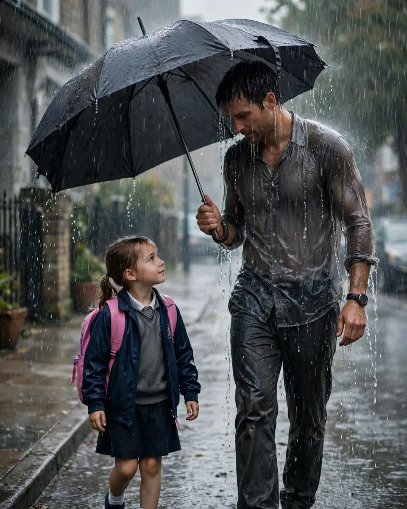

The Raincoat
A Clipp Kaili original story

My father owns an umbrella that has been broken for twenty-six years, and he refuses to throw it away.
I know exactly when it broke. I was seven, it was pouring, and we were walking to school because the car had died again — one of those months when money was so tight that Mom cut our toothpaste tubes open to get the last bit out.
Dad worked two jobs that year. Nights at the warehouse, days cleaning offices. He slept in pieces, in his chair, with his shoes still on. But no matter how tired he was, he walked me to school. Every morning. Him, me, and that big black umbrella.
Halfway there, the wind caught it and snapped one side. The fabric on his side tore loose and flapped like a broken wing. I remember waiting for him to fix it, or shake it, or at least move it a little toward himself.
He didn't. He just tilted the whole umbrella further over me and kept walking, rain pouring down his left shoulder, soaking through his work shirt, running off his chin.
"Daddy, you're getting wet," I said.
"I'm already tall," he said. "Rain hits me first anyway. Might as well make it useful."
I was seven. I believed him. I thought that was just how rain worked for fathers.
It took me twenty years to understand what I had actually seen that morning. It wasn't an umbrella. It was a map of my entire childhood. Every good thing tilted my way. Every storm tilted his. The last slice, the warm side of the car, the new shoes for me and the glued sole for him. He spent thirty years standing on the wet side of life so that I never had to.
Last month, I took him to buy a new umbrella. A good one. Expensive, windproof, the kind that could survive a hurricane.
He turned it over in his hands like it was a piece of fruit he wasn't sure was ripe. Then he handed it back.
"Mine still works," he said.
"Dad, yours has been broken since I was seven."
"No," he said, and smiled the smile that has embarrassed and saved me my whole life. "It works perfect. It keeps the rain off my daughter. That's the only job I ever gave it."
I bought the new umbrella anyway. I keep it in my car now, right behind the driver's seat.
Someday, if God gives me a little girl of my own, I plan to walk her to school in the rain — with a perfectly good umbrella held all the way over her, and my shoulder getting soaked, and her asking me why.
And I'll tell her the truth my father taught me without ever saying it out loud:
Love isn't staying dry. Love is choosing who gets wet.
← Back to all stories